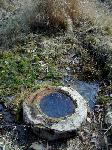
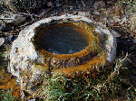
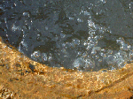
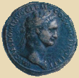
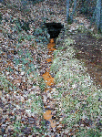
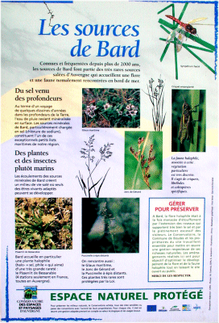
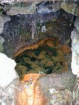
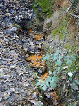
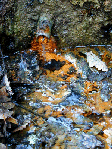

|

La source du "chaudron" fut découverte en
1882 par Michel Augier, aïeul du propriétaire
actuel.
Il creusa à 1,5 m de profondeurà
l'emplacement d'un suintement connu depuis longtemps dans
une parcelle plantée en vigne.
|
Recouverte par un glissement de terrain pendant
des siècles, la vasque est restée en
l'état, taillée dans la pierre du pays
(gneiss, roche voisine du granite) et calcifiée sur
ses bords par l'eau minérale.

Un trésor fut trouvé au fond de la
vasque, profonde de 80 cm à 1 m : 67 pièces de
monnaie romaine en bronze aux effigies des empereurs du
Ier au III ème siècle
après J.C.
|
L'eau a l'air de bouillonner sous l'effet du gaz
carbonique qui s'échappe.

Cette eau contient essentiellement du chlorure de
sodium, du calcium et du fer.
|
Pièce romaine représentant
Domitien (87 après J.C.)
diamètre 35 mm
|

|
|
|

Tout près de là, dans un bois,
cette petite source coule à fleur de terre.
L'autorisation de commercialiser l'eau de Bard,
demandée par Michel Augier en 1903, a
été accordée en 1912, deux semaines
après le décès du demandeur...le projet
a été abandonné.
|

Pour lire le panneau
cliquez ! et refermez la fenêtre ensuite
|

Les dépôts ferrugineux ornent la
partie du puisard au contact de l'eau.
Cette eau n'est pas à proprement parler
"potable" : c'est une eau de "cure". Sa qualité
bactériologique n'est pas assurée en
période de grande fréquentation.
|
|

|
Non loin de là, dans le cirque des
"Mottes", une petite source se cache au pied de la butte.
Son eau est sûrement de même nature que celle
des autres sources citées plus haut.
 vers la vallée des Saints
vers Auvergne vers la vallée des Saints
vers Auvergne
 Cirque des Mottes Cirque des Mottes

|

|